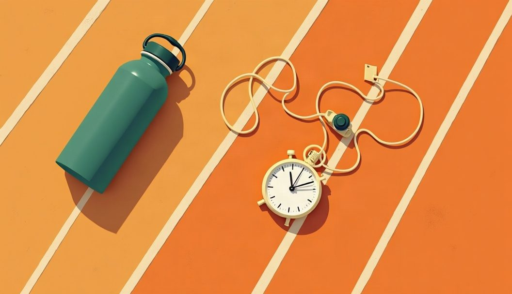

Her hafta
planlı.
Temelden yarış öncesi dinlenmeye, yarış gününe kadar seni neyin beklediğini gör.
Plan
Half marathon · race on 27 Dec · goal 1:45:00

Week 3 of 8
Race in 5 weeks
Base
Build
Specific
Taper
Week 1 · Base
22 km · 4 of 4
Week 2 · Base
24 km · 4 of 4
Week 3 · Build
30 km
11 of 30 km run · 2 of 4 sessions done
Mon
Easy run
5 km
Tue
Easy run
6 km
Thu
Intervals · 6 × 800 m
7 km
Sun
Long run
12 km
Week 4 · Build
32 km
Today
Plan
Coach
Progress
Yarışa 5 hafta
Yarı maraton · 27 Ara
4/4 antrenman
2. hafta tamamlandı